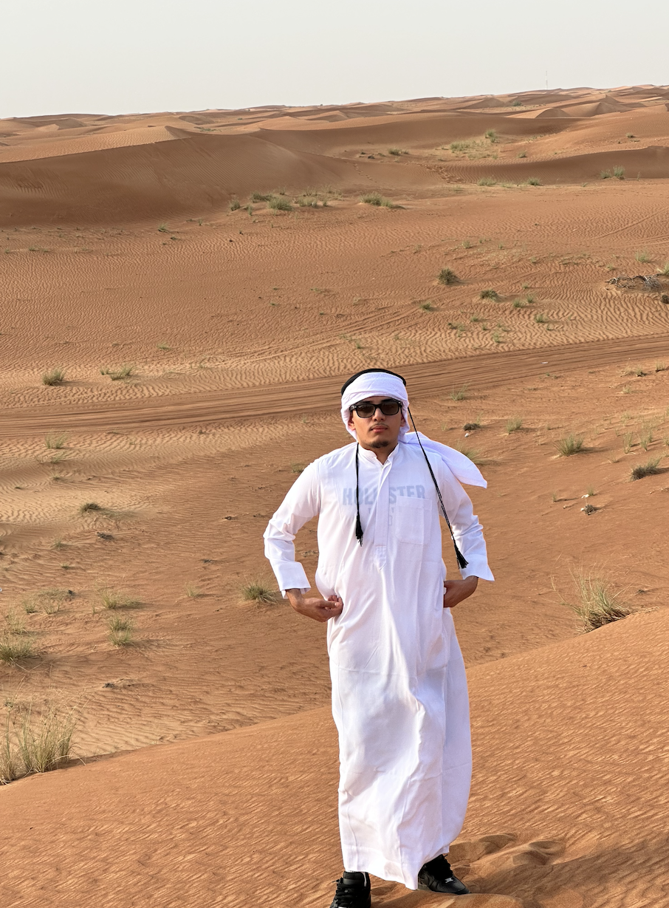

Sahaj Kataria

Summary
Highly motivated and diligent computer science student seeking a challenging opportunity to apply technical skills, learn and contribute to a dynamic team environment.
Education
- Bachelor of Computer Science (Applied Computing) (Co-op) - University of Windsor (2022-2026)
Work Experience
-
Learning Support Specialist - UCMAS
June 2016 - May 2019
- Provided individualized learning support to students enrolled in the UCMAS mental math and abacus training program.
- Checked and evaluated students' work to ensure accuracy and understanding of concepts. Offered guidance and assistance to students, helping them overcome challenges and improve their learning outcomes.
- Maintained detailed records of student progress and communicated feedback to parents and instructors.
-
Small Business Owner - 519blendz (My Own Barber Shop)
June 2020 - Present
- Established and managed my own successful barber shop, overseeing all aspects of operations and marketing.
- Collaborated with cross-functional teams to develop and execute effective marketing strategies, resulting in increased customer acquisition and retention.
- Created engaging content for social media platforms and the company website, effectively promoting services and attracting a wider customer base.
- Conducted thorough market research and analyzed data to identify target audience preferences, enabling the optimization of marketing campaigns for maximum impact.
-
Small Business Owner - H&S Landscape
June 2020 - Present
- Successfully established and managed H&S Landscape, a thriving landscaping business specializing in sod installation and other related services.
- Developed and executed comprehensive marketing strategies to generate leads and attract new clients, resulting in consistent business growth.
- Led a skilled team in delivering high-quality landscaping services, exceeding customer expectations and ensuring client satisfaction.
- Managed all aspects of the business operations, including client consultations, project planning, budgeting, and resource management.
Skills
- Customer service: ⭐️⭐️⭐️⭐️⭐️
- Problem-solving: ⭐️⭐️⭐️⭐️
- Time management: ⭐️⭐️⭐️⭐️
- Marketing: ⭐️⭐️⭐️
- Financial management: ⭐️⭐️⭐️⭐️
- Project management: ⭐️⭐️⭐️
- Team leadership: ⭐️⭐️⭐️⭐️
Awards and Certifications
- Notable Achievement: Awarded 7th place in the Toronto UCMAS competition (September 2014)
Other